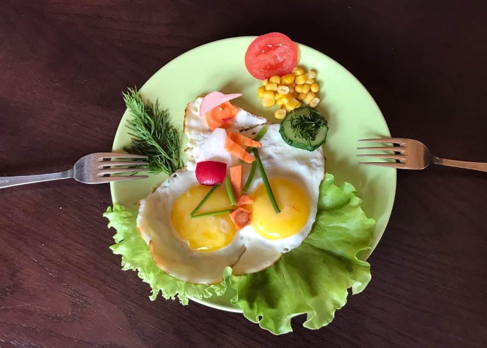

Kochbuch: Schnelles Abendessen | EAT SMARTER
2021.06.24 14:33
Direkt zum Inhalt Anmelden Registrieren Menü Suche Login Sommer Sommer-Rezepte Beeren-Rezepte Eis-Rezepte Erdbeer-Rezepte Grill-Rezepte Kirschen-Rezepte Sommergemüse Tomaten-Rezepte Zucchini-Rezepte Rezepte Kategorien Saisonale Rezepte Frühlingsrezepte Halloween-Rezepte Osterrezepte Party Rezepte Weihnachtsrezepte Winterrezepte Kochbücher Getränke Kalorien Rezepte unter 250 kcal Rezepte unter 400 kcal Rezepte unter 500 kcal Rezepte unter 600 kcal Rezepte über 600 kcal kalorienarme Gerichte kalorienarme Rezepte Schwierigkeit Schnelle Gerichte Blitzrezepte Schnelles Abendessen 15-Minuten-Rezepte Ernährungsarten Vegetarische Rezepte Diät-Rezepte Vegane Rezepte Fettarme Rezepte Wenig Zucker Vollwert Vitaminreich Eiweiß-Rezepte Glutenfreie Rezepte Laktosefreie Rezepte Ballaststoffreich Rohkost Low Carb Rezepte Low Carb Abendessen Abnehmrezepte Rezepte nach Zutaten Aubergine Rezepte Avocado Rezepte Blumenkohl Rezepte Brokkoli Rezepte Grünkohl Rezepte Kürbis Rezepte Mangold Rezepte Pfifferlinge Rezepte Rosenkohl Rezepte Rotkohl Rezepte Spargel Rezepte Spitzkohl Rezepte Süßkartoffel Rezepte Wirsing Rezepte Zucchini Rezepte Partnerrezepte Internationale Küche Afrikanische Rezepte Deutsche Rezepte Europäische Rezepte Lateinamerikanische Rezepte Mittelamerikanische Rezepte Nordamerikanische Rezepte Osteuropäische Rezepte Südamerikanische Rezepte Backen Backen ohne Zucker Brotrezepte Brownies Rezepte Brötchen Cookies Rezepte Gebäck Herzhafte Kuchen Kuchen Plätzchen Rezepte Teig Torten Dessert Rezepte Cremes Crêpe Rezepte Eis Rezepte Obstdessert Pancakes Rezepte Pfannkuchen Rezepte Pudding Rezepte Tiramisu Rezepte Waffeln-Rezepte Kochen Suppen-Rezepte Burger-Rezepte Curry-Rezepte Fleisch-Rezepte Gemüse-Rezepte Gesundes Frühstück Gnocchi-Rezepte Gulasch-Rezepte Kartoffel-Rezepte Klassische-Rezepte Lasagne-Rezepte Pasta-Rezepte Pilz-Rezepte Reis-Rezepte Rezepte nach Mahlzeiten Salat-Rezepte Bohnensalat Caesars Salad Gurkensalat Krautsalat Nudelsalat Starköche-Rezepte Gesunde Ernährung News Lebensmittel-Lexikon Obst Gemüse Superfood Hülsenfrüchte Nüsse Milch & Milchprodukte Getreide & Getreideprodukte Gewürze Öle & Fette Kräuter Meeresfrüchte Fisch Fleisch & Geflügel Ernährungspläne Ernährungsarten Ernährung bei Krankheiten Ernährung bei Arthrose Ernährung bei Bluthochdruck Ernährung bei Diabetes Ernährung bei Fettleber Ernährung bei Gastritis Ernährung bei Gicht Ernährung bei Hashimoto Ernährung bei Laktoseintoleranz Ernährung bei Osteoporose Ernährung bei Reflux Ernährung bei Reizdarm Ernährung für Kinder Meal Prep Fasten Nährstoffe Studien Smarte Reiskunde Natürlich besser-Blog Do-it-Yourself Starköche Was koche ich heute? Klüger abnehmen News Unser Abnehmkurs Diäten im Überblick Intervallfasten Intervallfaten 16:8 Intervallfasten 5:2 Keto-Diät Sirtfood Diät Paleo-Diät Zuckerfreie Ernährung Blutgruppendiät Atkins-Diät DASH-Diät Dukan-Diät FODMAP-Diät Almased Diät Glyx-Diät Diätrezepte unter 250 Kalorien Ernährungspläne im Überblick Abnehmtipps Abnehmprogramme EMS-Training Smarter leben News Übersicht Themen Blogs Experten-Blogs Der Fitness-Doktor Der Ernährungs-Doktor Clean Eating Good Food-Blog Die Getränkeprüfer Redaktions-Blogs Eat.train.laugh Fun-Food Green Living Grüne Beete Smarter kochen Veggie & Co. Vegan Food-Blog Live Smarter-Blog foodpioniere Blog Good News-Blog Natürlich besser-Blog Video Rezeptvideos Online-Kochkurs Kochschule für Anfänger Küchentricks Polettos Kochschule Küchentipps Expertenvideos Kinderkochschule Kochtipps Selber machen Entenbrust zubereiten Fenchel zubereiten Gnocchi selber machen Grundrezepte Grünen Spargel kochen Grünkohl kochen Klassiker Mangold zubereiten Maronen zubereiten Nudeln kochen Pizzateig selber machen Rosenkohl kochen Spargel kochen Süßkartoffeln kochen Fitness Branchennews Food Start-ups Produktempfehlungen Special: Kaffee im Büro Produktneuheiten Nachhaltigkeit Resteverwertung Lexikon Küchenlexikon Kulinarische Reise Gesundheit Umwelt-Blog Fackelmann HanseGarnelen Extra Picknick-Special Aktionen Gewinnspiele Produkttests Redaktionstest: Feelgood von reis-fit Ergebnisse: Saupiquet Ergebnisse: Simply V Ergebnisse: GROHE Smarte Shots von Rabenhorst Ergebnisse: ORYZA Ergebnisse: Shape Republic Cooking Star Kochkurse Leserpost Abo Bücher Newsletter Unsere Ernährungskurse Zeitschriften Shop Reformhaus® NEU: Unsere Ernährungskurse Newsletter Über uns Karriere Dein EatSmarter Melde dich an und speichere Rezepte im Kochbuch. Login Registrieren Häufig gesucht Sommer ↖ Grillen ↖ Sommersalate ↖ Blumenkohl ↖ Zucchini ↖ Thema des Tages Warum Erste Hilfe so wichtig ist ↖ Rezept des Tages FroYo Bites ↖ EatSmarter » Rezepte » Rezeptsammlungen » Schnelles Abendessen Top 25 Kochbuch
Schnelles Abendessen
Rezepte ausgewählt von: Isabelle Philippi share Teilen bookmark_border URL kopieren mail E-Mail Platz 25:Kurkuma-Linsennudeln
4.875 (8) 20 min leicht 291 kcal Zum RezeptNach getaner Arbeit ist der Hunger meist groß – doch die Lust, etwas zu kochen oft eher gering. Ein schnelles Abendessen muss jedoch nicht gleichbedeutend sein mit langweilig belegten Broten: Auch Suppen, Salate, Pasta und Co. sind in Nullkommanichts zubereitet.
Die besten Rezepte für ein schnelles Abendessen
Die Rezeptideen in dem Kochbuch "schnelles Abendessen" stehen in maximal 20 Minuten verzehrfertig auf dem Tisch, machen satt und sind noch dazu gesund! Etwa unsere Gnocchi-Zucchini-Pfanne : Sie bekommt auch einem gestressten Magen prima und belastet nicht. Die Tomaten liefern Carotinoide und mobilisieren damit die Abwehrkräfte, der Parmesan steuert knochenstärkendes Calcium bei.
Ein schnelles Abendessen kann auch eine wärmende Suppe beinhalten – etwa unsere Orangen-Tomaten-Suppe . Punkte sammelt die milde Cremesuppe nicht nur mit calciumreichen Sahnetupfen, sondern auch mit vielen weiteren Mineralstoffen und Spurenelementen. Mithilfe dieses Kochbuchs wird auch Ihr schnelles Abendessen zu einem kulinarischen Highlight des Tages und bietet Abwechslung auf dem Teller!
Wenn es noch schneller gehen muss
Um noch mehr Zeit bei der Zubereitung zu sparen, können Sie auf Tiefkühlgemüse zurückgreifen. Das ist nicht nur prima zu lagern, sondern enthält mitunter mehr Vitamine und Mineralstoffe, als es bei frischen Varianten aus dem Supermarkt der Fall wäre. Bereiten Sie gleich die doppelte Menge des Rezepts zu und frieren Sie diese portionsweise ein. So haben Sie immer etwas Gesundes für ein schnelles Abendessen zu Hause parat.
mehr anzeigenDie 25 Rezepte aus diesem Kochbuch
Platz 25 Empfohlen von IN FORM Kurkuma-Linsennudeln 4.875 (8)20 Min.
20 Min.
291 kcal
Platz 24 Empfohlen von IN FORM Orientalische Reispfanne mit Brokkoli 5 (3)20 Min.
20 Min.
425 kcal
Platz 23 Klassiker mal anders Orangen-Tomaten-Suppemit Sahnetupfen
4.733335 (15)10 Min.
20 Min.
182 kcal
7,7 Platz 22 Figurbewusst genießen Rucolasalat mit Mango, Avocado und Kirschtomaten 5 (8)15 Min.
15 Min.
306 kcal
8,1 Platz 21 Entzündungslindernd Lachs-Spinat-Pasta 4.77778 (18)20 Min.
20 Min.
612 kcal
8,4 Platz 20 Enthält viele gute Fette Avocado mit Mandelkrusteund Bulgur-Tomaten-Salat
4.545455 (11)20 Min.
20 Min.
559 kcal
8,5 Platz 19 Besonders eiweißreich Rindfleisch-Ingwer-Pfanne 5 (8)20 Min.
20 Min.
571 kcal
8,8 Platz 18 Stärkender Eiweiß-Kick Hähnchengeschnetzeltes mit Pilzen 4.75 (12)20 Min.
20 Min.
475 kcal
8,8 Platz 17 Leichtes Mittagessen Hähnchen-Paprika-Curry mit Reis 4.95 (20)15 Min.
15 Min.
734 kcal
8,9 Platz 16 5-Zutaten-Küche Roggenbrote mit Avocado und Rote-Bete-Aufstrich 5 (3)15 Min.
15 Min.
342 kcal
8,9 Platz 15 Blitz-Clean-Eating-Rezept Kichererbsen-Feta-Salat 4.9375 (16)20 Min.
20 Min.
252 kcal
9,1 Platz 14 Klassiker in Low Carb Konjaknudeln mit Garnelen 5 (3)20 Min.
20 Min.
244 kcal
9,3 Platz 13 Gesunder Feierabend Gemüse-Couscous mit Rinderfrikadellen 5 (4)20 Min.
20 Min.
623 kcal
9,3 Platz 12 Besonders eiweißreich Kräuter-Omelett mit Räucherlachs 4.272725 (11)15 Min.
15 Min.
272 kcal
9,3 Platz 11 Blitz-Clean-Eating-Rezept Gnocchi-Zucchini-Pfannemit Kirschtomaten und Parmesan
4.59155 (71)10 Min.
10 Min.
386 kcal
9,3 Platz 10 Low Carb Dinner Zitroniges Fischfilet mit Zucchinigemüse 4.6 (5)20 Min.
20 Min.
235 kcal
9,3 Platz 9 Low Carb und Eiweißreich Bunter Tomatensalat auf körnigem Frischkäse 4.958335 (24)10 Min.
10 Min.
151 kcal
9,5 Platz 8 Seelenwärmer Kokos-Fisch-Curry mit Blattspinat 4.333335 (6)20 Min.
20 Min.
344 kcal
9,6 Platz 7 Besonders eiweißreich Zucchini-Omelette mit Ziegenkäse und Rucola 4.444445 (9)15 Min.
15 Min.
581 kcal
9,6 Platz 6 Gut für die Haut Hüttenkäse-Aufstrich auf Süßkartoffel-Toast 4.375 (8)15 Min.
15 Min.
284 kcal
9,6 Platz 5 Zum Mitnehmen Vegetarische Vollkorn-Wraps 4.6 (5)15 Min.
15 Min.
217 kcal
9,7 Platz 4 Clean-Eating-Rezept Linsen-Champignon-Bowl mit Ziegenkäse 4.92857 (14)20 Min.
20 Min.
418 kcal
9,7 Platz 3 Schnelles Low-Carb-Rezept Shrimps mit Brokkoli und Sprossen aus dem Wok 4.375 (8)15 Min.
15 Min.
257 kcal
9,7 Platz 2 Gesunder Low-Carb-Snack Paprika mit Hüttenkäse 4.75 (8)15 Min.
15 Min.
140 kcal
9,7 Platz 1 Schnelles Abendessen Nudel-Hackfleisch-Pfanne mit Ziegenkäse 5 (12)15 Min.
15 Min.
670 kcal
9,8 Derzeit beliebt 25 Rezepte Schnelles Abendessen In 20 Minuten fertig! 30 Rezepte Was koche ich heute? Perfekt für den Alltag 30 Rezepte Gerichte mit nur 5 Zutaten Simpel, lecker, gesund Kochbücher der Woche 30 Rezepte Smarte Sommergerichte Erfrischendes für heiße Tage 30 Rezepte Gesunde Grillrezepte Feine Kost vom Rost 25 Rezepte Sommerliche Kirsch-Rezepte Kuchen, Desserts und mehr 20 Rezepte Fruchtige Stachelbeer-Rezepte Sauer macht lustig! Kochbücher von A-Z # a b c d e f g h i j k l m n o p q r s t u v w x y z Über uns Karriere Sitelinks Mediadaten Kontakt AGB Impressum Datenschutz Datenschutzeinstellungen Kategorien- 21 schnelle Rezepte für einen leckeren Feierabend .
- Kochbuch: Schnelles Abendessen | EAT SMARTER
- Schnelles Abendessen | Leckere Kochideen | Kitchen Stories
- Rezepte für ein schnelles Abendessen | Chefkoch.de
- Schnelle Mittagessen - 6 Rezepte unter 30 Minuten • Koch-Mit
- [Schnell & einfach] 3112 leckere Rezepte zum Abendessen .
- Gesunde-Abendessen-Rezepte | Swissmilk
- 2871 leckere Rezepte fürs Abendessen - REWE
- 900+ ABENDESSEN SCHNELL & EINFACH . - Pinterest
- Abendessen-Rezepte - einfach und lecker | DasKochrezept.de
- 21 schnelle Rezepte für einen leckeren Feierabend .
- Kochbuch: Schnelles Abendessen | EAT SMARTER
- Schnelles Abendessen | Leckere Kochideen | Kitchen Stories
- Rezepte für ein schnelles Abendessen | Chefkoch.de
- Schnelle Mittagessen - 6 Rezepte unter 30 Minuten • Koch-Mit
- [Schnell & einfach] 3112 leckere Rezepte zum Abendessen .
- Gesunde-Abendessen-Rezepte | Swissmilk
- 2871 leckere Rezepte fürs Abendessen - REWE
- 900+ ABENDESSEN SCHNELL & EINFACH . - Pinterest
- Abendessen-Rezepte - einfach und lecker | DasKochrezept.de
